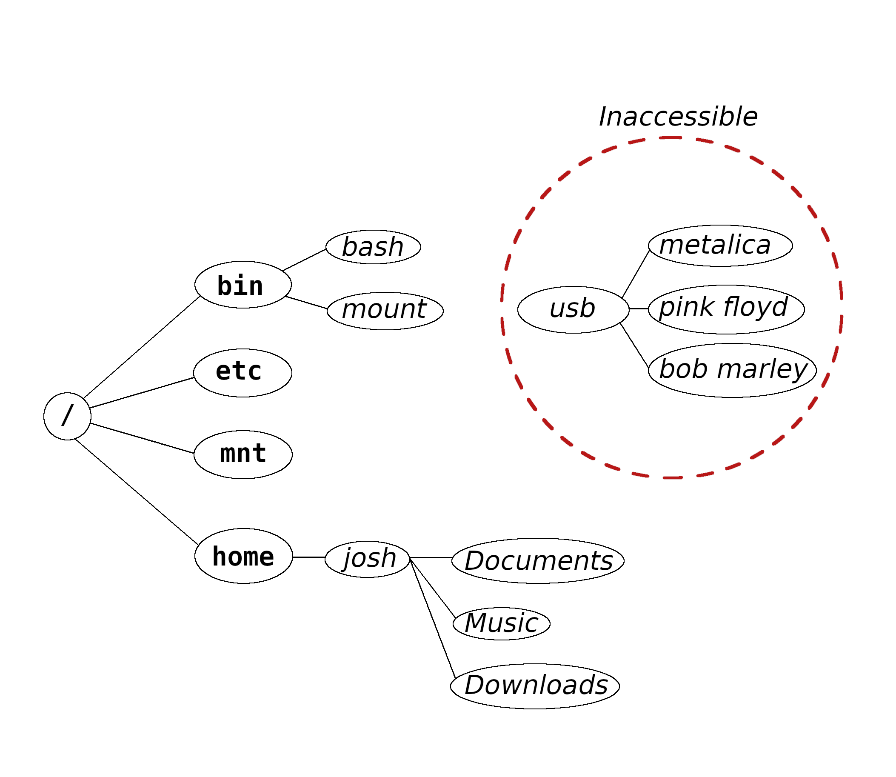
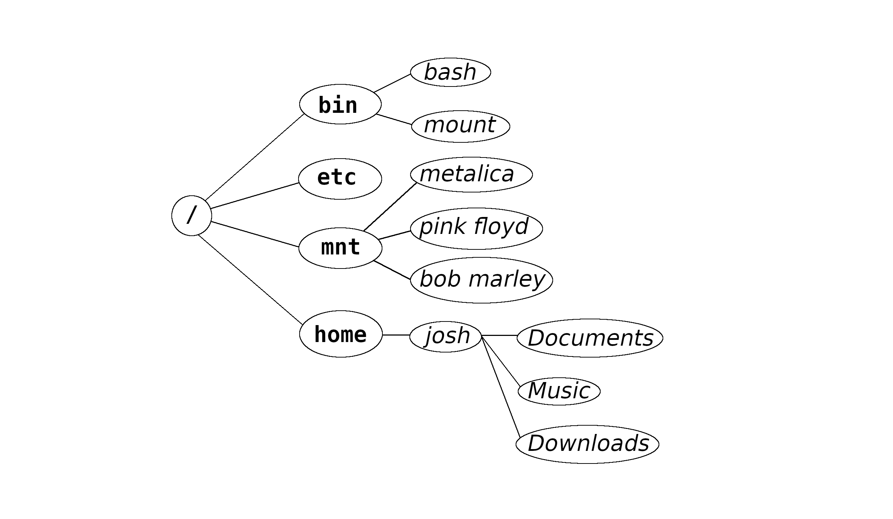

The protogenesis of Unix was a filesystem.[1][2]
Designed and implemented by the researchers of Bell Laboratories,
this piece of software became an operating system
when a means of interacting with its contents was
introduced.
Files
In Unix, a file is a sequence of bytes.[1]
This definition is sufficiently abstract to allow, for instance, a keyboard
to appear as a file.
Unix-like operating systems facilitate interaction with
files through four essential system calls:
In particular, the read() system call fills a given
buffer with the contents of a file;
order is preserved across sequential calls to read().
When a program requests a read, the kernel suspends its execution,
loads the appropriate data, then resumes execution of the program.
File Attributes
A substantial amount of information about each file is stored
on the system.
Such information is called
metadata,
though within the context of Unix files,
we usually refer to it as file attributes.
File attributes consist of:
Aside:
Oddly, this information does not include the file's name.
More on this below.
File Type
Read/Write/Execute Permissions
Owner
Group
Size
Timestamps
This data is stored alongside the file, typically on-disk,
and its quantity can be explained by the
operating system's time-sharing heritage.
It is used today to compartmentalize the machine.
Regular Files
A regular file is stored on a disk or other persistent storage
device.
Most files are regular files.
The first character, a hyphen (-), tells us that
/bin/bash is a regular file.
The next nine characters are its
permission bits;
the r and x present in each trio indicate
that this file is readable and executable (respectively) by any user on
the system.
The w present only in the owner trio indicates that the
file may be written to only by its owner, who in this case
is root.
Two other tools for peeking
into a file are file, which attempts to categorize the file, and
stat, which prints the file's complete metadata:
To simply view the contents of a file, we can use the
less
paging utility, which interprets the file as text.
Device Files
The Unix directory tree is used as a general-purpose
meeting place:
In addition to regular files, it also contains references to
hardware, offers information about the running system,
and allows interprocess communication.
This mechanism is general, extensible, and allows both users
and programmers access to the running machine.
A device file is a file that represents a device
connected to the system.
Device files reside in /dev.[3]
For example, when a USB-stick is inserted,
a new file appears in /dev, and the device may be
read from or written to (directly) by passing
that file to tools like cat or dd.
It's interesting to note that the essential capabilities
of the USB-stick are preserved through the
file interface: It can be read from and written to.
If we were to add the capacity to
seek
(i.e., change location) within the file, then we would be able to use the
device in its entirety.
Block and Character Device Files
Unix kernels support two kinds of device files:
Block and Character.
A character device file may only be read from or written to
a single byte (ASCII character) at a time.
A keyboard is one kind of device represented by a
character device file.
Hard disks, SSD's and removable mass media are represented by
block device files:
These devices support reading and writing only
in blocks of bytes at a time, and the kernel must
buffer arbitrary interactions with it.
Additionally, block device files support seeking, whereas
character devices do not.
The Linux kernel augments the traditional Unix directory tree with
pseudo (or "synthetic") files.
These files do not exist on disk, and do not exist on
any persistent storage.
Instead, their contents are generated dynamically
by the kernel as processes interact with them.
For example, /proc/meminfo contains a
description of the system's current memory usage:
Aside:
Here we are using the cat command to
concatenate the contents of the file
to the standard output stream (our terminal screen).
/proc contains one directory for each
process (running program) on the system; therein, each directory
contains substantial information about its respective process.
/sys contains information useful to only the
lowest-level system daemons.[4]
Other File Types:
FIFO:
Also called a "pipe", "FIFO" stands for First in, first out.
This is file type is used to connect one running program to another.
find recursively descends through a directory
tree in search of files.
Directories are a special kind of file, and early Unix
kernels allowed them to be manipulated relatively unabated.[2]
However, the directory structure is intended to be a
hierarchy, and some software (like find)
depends upon this structure.
Leaving directory contents exposed to users introduced the
possibility that a loop could form, or that a
directory subtree could be broken off without being properly
deallocated.[5]
So, directories are now hidden behind a separate system
call interface.
Directories start life with two entries:
. ("dot"),
and .. ("dot dot").
These entries cannot be removed, nor changed.
The first, ., is a reference to the containing directory
itself,
and is used as a handle to the current working directory.
.. is a reference to the directory's
parent directory.
Since each directory has a single parent,
and creating new references to directories is not allowed, the
directory structure is guaranteed to be a tree.
Within a Unix directory tree, some common themes will be found.
For instance, bin directories are found in several places, such as
/bin, /sbin, along with /usr/bin
and often /home/user/.local/bin as well.
These contain binary executable files— programs— such as
bash and ls.
Other standard directories include /root, the root user's home
directory, and /proc and /dev, as
mentioned above.
Some of these have been standard since Unix's inception,
while others have become standard in more recent years.
Aside:
The Filesystem Hierarchy Standard formally
describes the GNU/Linux directory tree. It is maintained
by the Linux Foundation.
Let's start at the top.
Each Unix-like operating system has a single root directory,
/, which is the root of the directory tree.
Every file on the system may be addressed in
absolute terms by giving its location relative to this
directory.
/home contains users' home directories.
As user josh, my home directory is /home/josh.
This path is commonly abbreviated to ~.
By default, it contains the usual "Music", "Movies", "Pictures" and
"Downloads".
Per-user configuration files are stored here— as either
hidden files or in the directory ~/.config.
The /usr directory is dedicated to
user-space (as opposed to kernel-space) files.[6]
It contains programs, libraries, manual pages, C header
files, and other things.
These files are shared by all system users, and are read-only.
System configuration is traditionally maintained as a collection of
plain-text, human-readable regular files.
System-specific configuration is kept in /etc,
while distributions' default configurations are typically
stored in /usr, alongside their respective packages.
As a general rule, modify /etc, and let your
distribution handle /usr.[7]
/tmp, /run, and /var each hold
transient files of running programs.
/boot holds everything required for the boot sequence,
including my very own Linux kernel:
This file is copied (loaded) into memory early in the boot process,
after which it is no longer needed.
Software libraries are kind of boring, but essential to modern systems.
The basic idea is to factor out repeated code (for instance,
C's printf function) not just from the source code, but
from executable files as well.
This means that, when a bug or security vulnerability is found in
printf, any program that uses the function will not
have to be recompiled; rather, the appropriate library can be adjusted,
and all dependant programs can continue operation in blissful ignorance
of the change.
Such executable files are said to be dynamically linked,
and cannot be expected to run properly without their dependencies.
/lib holds libraries.
Mounting a Filesystem
As mentioned, Unix-like operating systems maintain a single
directory tree for the entire system.
When a new device is introduced to the machine,
the directory tree its filesystem contains must be placed in the
system's existing directory tree before its contents can
be accessed.
This operation is known as mounting.
Let's take a look at this, for it is new.
Suppose we have a USB stick with some music on it.
When we plug it into the machine, a file representing
the device appears in /dev, but
its contents are not yet available:

Assuming the device popped up as "/dev/usb",
we could mount it with,
$ sudo mount /dev/usb /mnt
Resulting in:

The files are now accessible through the directory tree.
In practice, a USB-device is
much more likely to be named
/dev/sdb or /dev/sdc, with partitions,
/dev/sdc1, /dev/sdc2, /dev/sdc3, ... .
Hence, a more realistic call to mount would be,
$ sudo mount /dev/sdc1 /mnt
When a filesystem is mounted to a directory that is not empty,
the original directory's contents become hidden by those
of the new filesystem,
and are inaccessible until the filesystem is unmounted.
Therefore, we typically locate an empty directory in the existing
directory tree, and use it as the to-be mounted filesystem's root
directory.

.jpg)